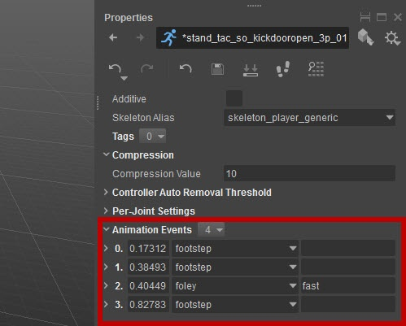

Overview
This page deals with the AnimEvent Database and the Tracks Database. For general information about the .chrparams File and on how to map animations, see the CRYENGINE V Manual and Character Parameters File (chrparams) documentation.
The .chrparams file, or Character Parameters File, contains a reference list of animation files (.caf) to character specific animations in the game. The .chrparams file has the same name as the character file to which it refers.
Aside from listing all animations that the engine should load for the character, the .chrparams file has special entries that allow the specification of an animation events database and a tracks database. Both entries are optional.
Sections
Setup
Creating Timeline Events
You can add Animation Events by double clicking on the timeline. Each animation can have a set of them:
Accessing Context Menu
The timeline has a context menu that gives you possibilities to jump between frames and events. It also contains hints about keyboard shortcuts.

Event Properties
These are stored in a separate ANIMEVENTS file. Such file is referred from skeleton parameters (CHRPARAMS) and contains lists of animation events per animation.
That is, with multiple animations in one file. Nevertheless they are saved when you save an animation entry. The same way you save *.animsettings.
If you need to quickly create a large amount of events you may use the AnimEvent Presets panel.
Presets
Toggle
Toggle gives you a set of quickly accessible animation events. You can add them to the timeline with a double-click, or by using assignable hotkeys (number keys 1-0).